Marca · piezas finales
DSL International Orchids
El logo que eligieron, la caligrafía en oro rosa, ya redibujado en vector y aplicado a la tarjeta, el tríptico, la firma de correo y los empaques.
Marca · piezas finales
El logo que eligieron, la caligrafía en oro rosa, ya redibujado en vector y aplicado a la tarjeta, el tríptico, la firma de correo y los empaques.
Logo
Es el mismo logo que aprobaron, con sus letras y su brillo metálico. Los contornos están en vector, así que los bordes quedan nítidos a cualquier tamaño, de una tarjeta a un aviso.
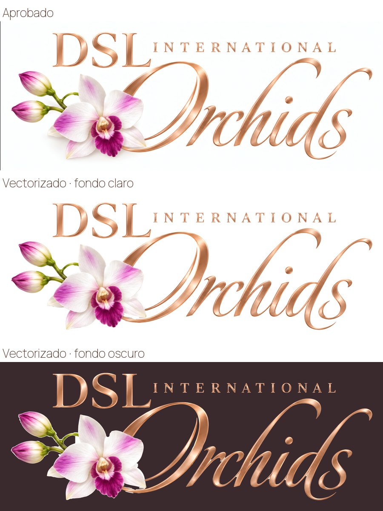
Tarjeta de presentación
Dos opciones de frente, claro u oscuro, con el mismo reverso: los dos teléfonos, el correo de ventas y el código QR a dslorchids.com.
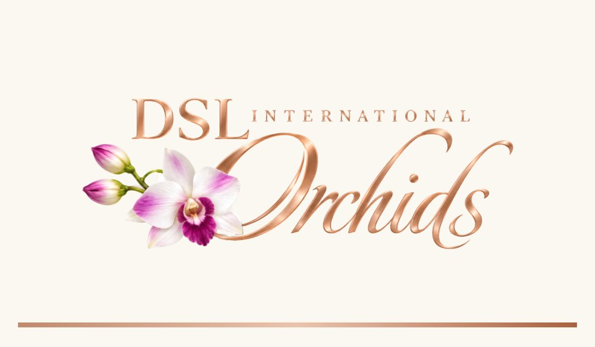
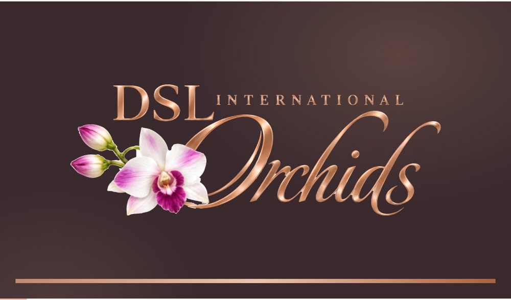
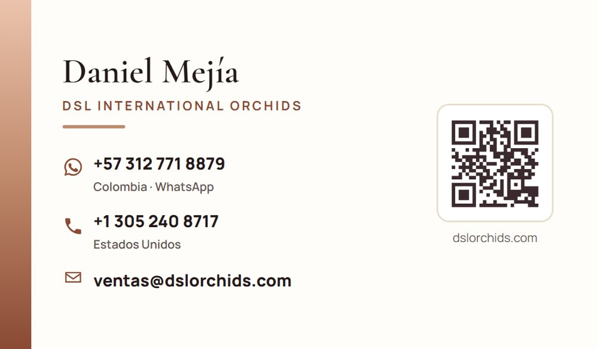
Tríptico
Con la nueva marca, la portada de orquídeas blancas y rosadas, y los datos de contacto actualizados.
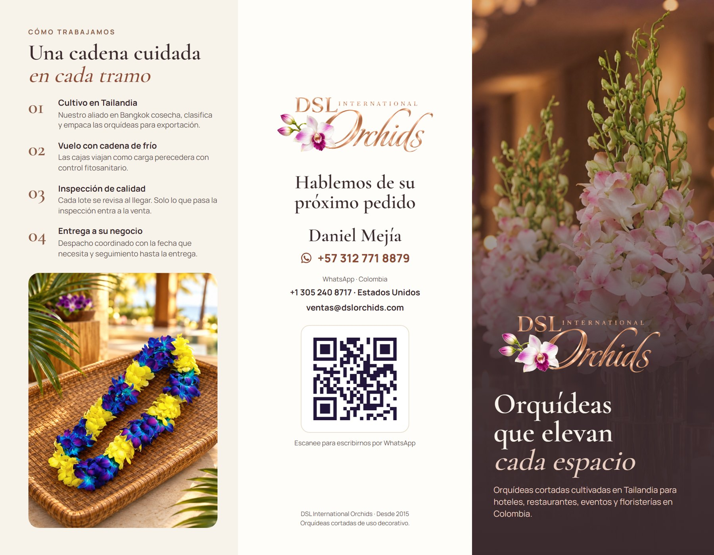
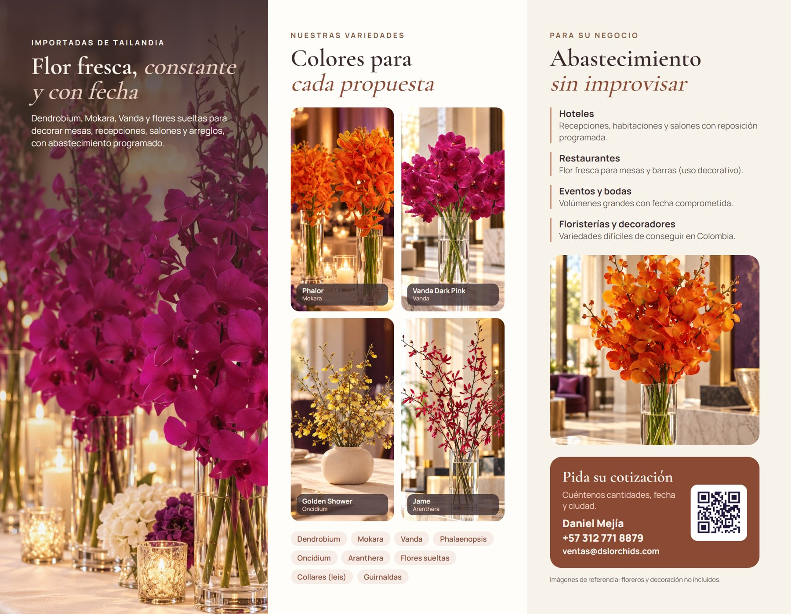
Firma de correo
Ventas, contabilidad e información, con el logo, los teléfonos y la web. Se copian y se pegan en Gmail.
Caja y bolsa de regalo
Caja larga para orquídeas, bolsa de regalo, sticker para cerrar el papel de seda y una tarjeta de cuidados que va dentro de la caja. Cada pieza en versión oscura y clara.
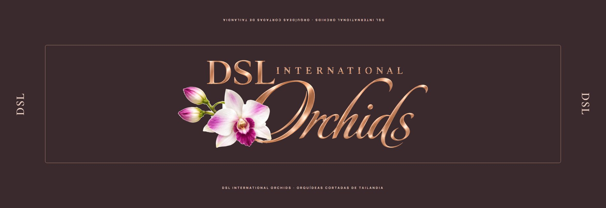
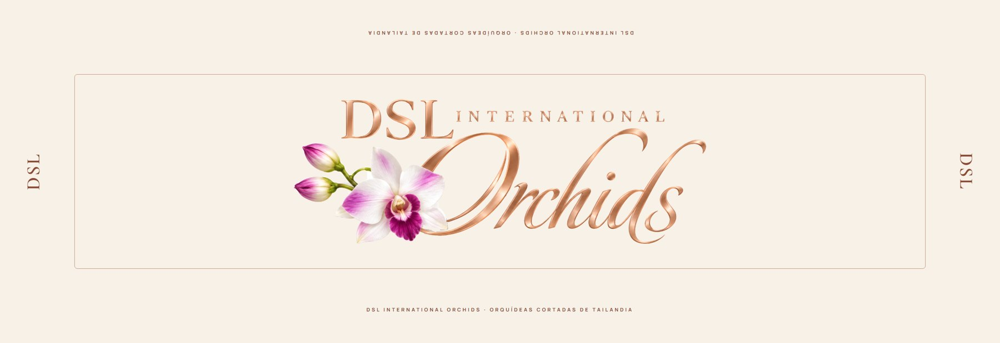
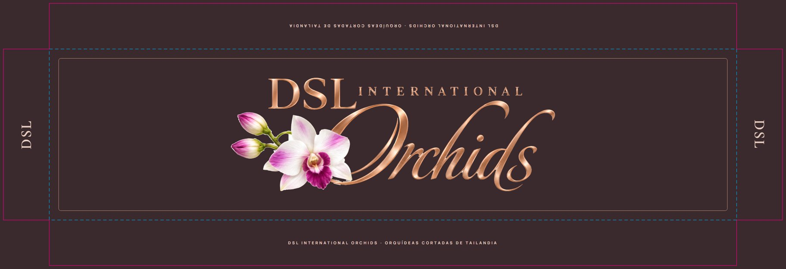
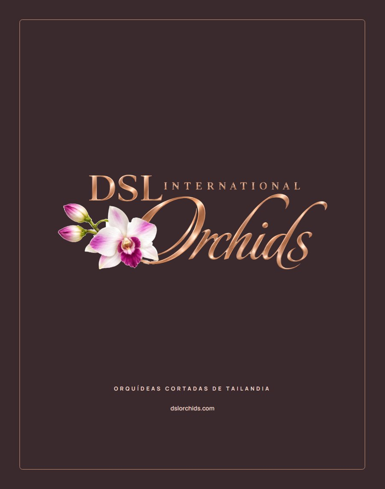
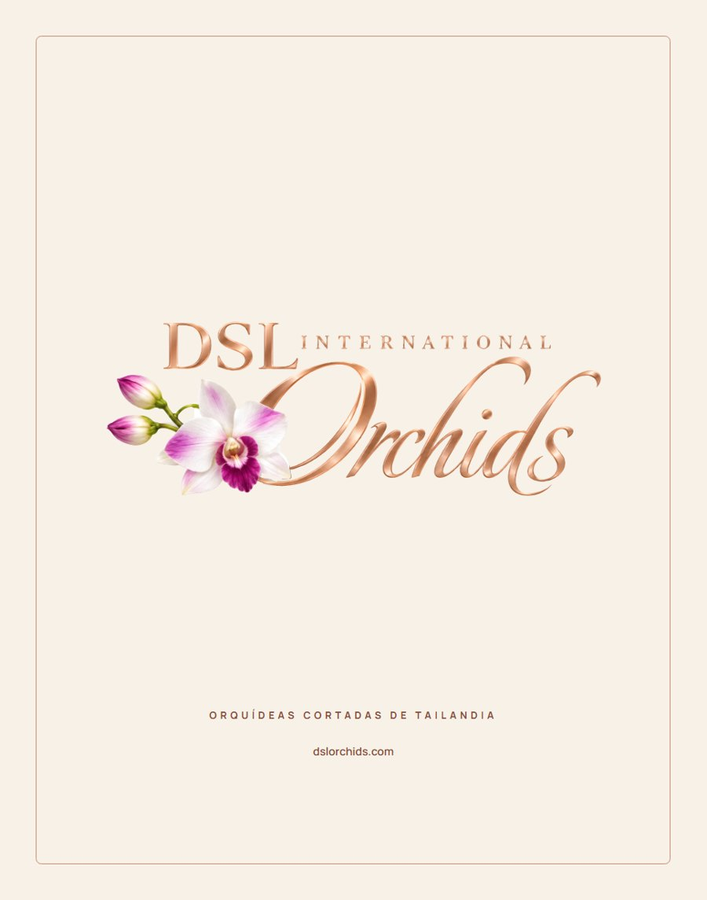
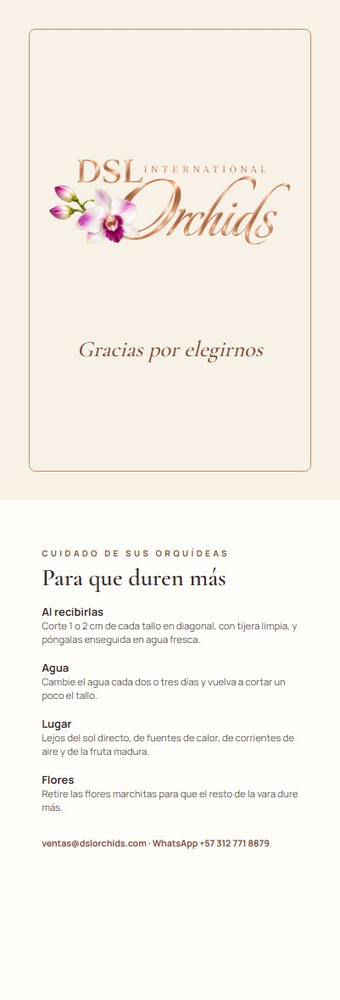
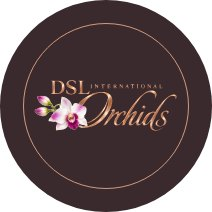
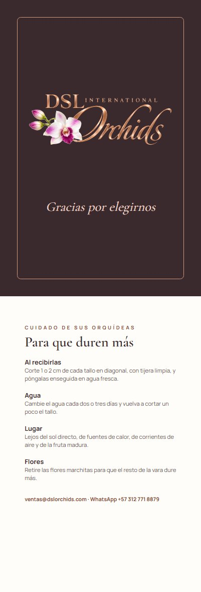
Así se vería
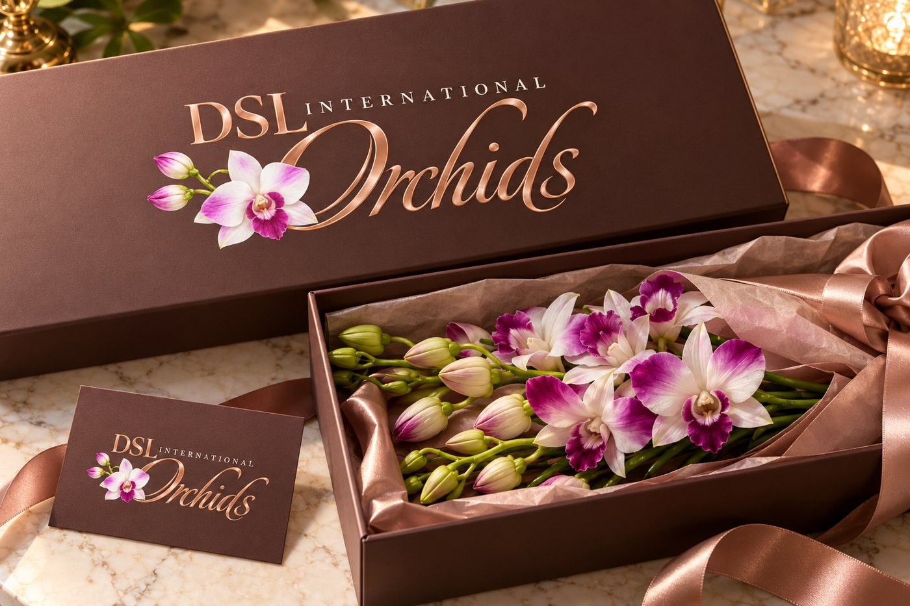
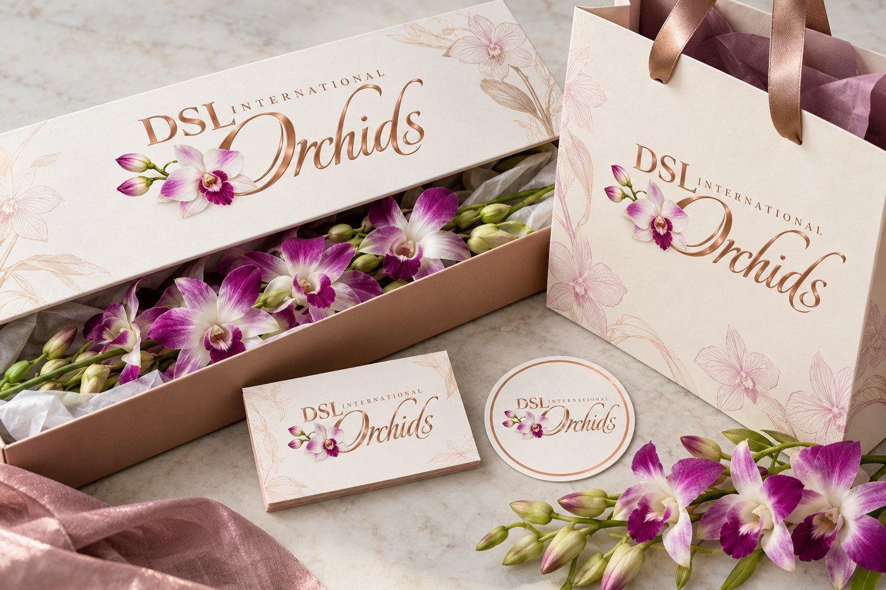
Archivos
| Para | Usar |
|---|---|
| Imprenta (cajas, bolsas, avisos, tarjetas) | PDF vectorial del logo y los PDF de cada pieza, que ya traen 3 mm de sangrado |
| Web, redes y presentaciones | PNG del logo (fondo transparente) |
| Fondos claros (blanco, marfil, rosa palo) | Versión clara |
| Fondos oscuros (café, negro, verde) | Versión oscura |